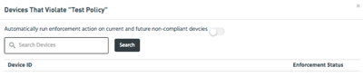

You can apply remediation policies to all noncompliant devices in the policy's device group, or select specific noncompliant devices to remediate to.
Access these options from an existing remediation policy in Compliance > Remediation Policies.
To apply remediation
